עדן קוסמטיקס · כיוון ויזואלי · 30.9.2026
אור בוקר על אבן, סאטן בצבע ורד מאובק, והעיקול של ריס מורם, שחוזר באתר כמו חתימה. הכול כבר בנוי בכלים חינמיים. ה-API בתשלום מחליף את השכבה המצוירת בצילום, בלי לשנות אף החלטה.
עדכון, 30.9 בלילה: השכבה החינמית כבר לא רק כאן. היא עלתה לאתר החי עצמו (גרסה 7): המסך הראשון מצויר בזמן אמת על כרטיס המסך, נוסף אזור "כך מתרומם ריס" שבו עין מצוירת עוברת את שלבי הטיפול בגלילה, ולכל מותג יש כרטיס בחומר שלו. בבנייה באתר החלפתי את צללי עלי הלוטוס בענף זית: צל עגול של לוטוס נראה מלאכותי, וענף זית נראה כמו שמש אמיתית. הלוטוס של הלוגו עבר לאזור של עדן.
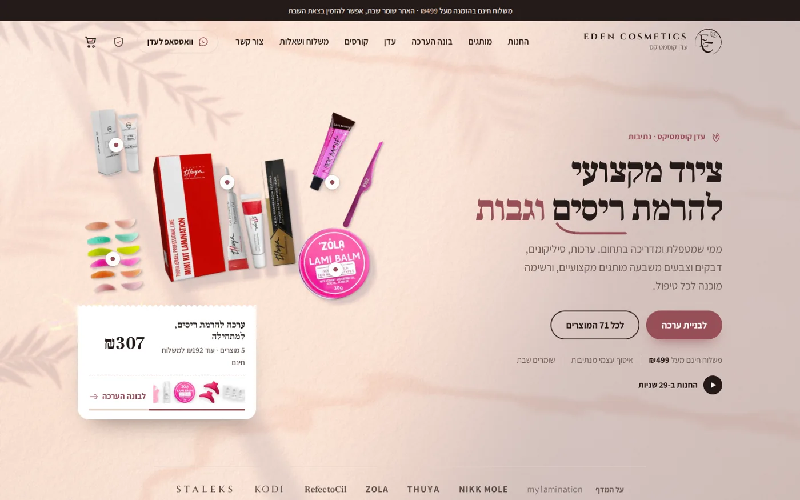
המסך הראשון באתר החי: אבן באור שמש נמוך, צל של ענף זית שזז ברוח, ושישה מוצרים אמיתיים שמטילים צל. העכבר מזיז את השמש.
כל החלטה עיצובית נגזרת מעובדה על העסק. בלי העובדה, אין החלטה.
הקומפוזיציה, הפלטה, קנה המידה והמקומות באתר נקבעים עכשיו. ה-API מחליף רק את החומר.
מבנה, טיפוגרפיה, 64 חיתוכי מוצר על במה אחידה, נקודות קנייה, קבלה, בונה ערכה, מדף מותגים וצבעי האריזות.
משטח ואור ב-WebGL, סרט סאטן בתלת-ממד (Three.js), שדות חומר לשבעה מותגים, לוטוס מהלוגו, שני סרטי טיוטה, וחיתוך מוצרים עם בינה מלאכותית פתוחה (BiRefNet) לכל 71 המוצרים.
אותם בריפים כצילום: Nano Banana Pro למשטח, FLUX.2 [pro] לסרט ולשדות, Seedream ללוטוס, ו-Veo 3.1 או Kling 3.0 לסרטונים. נכנסים לאותם מקומות בדיוק.
כלל שלא משתנה בשום שכבה: תמונה שנוצרה לא מראה מוצר, לוגו, טקסט, פנים או "תוצאה". היא רק החומר שהמוצר האמיתי עומד עליו.
כל מקום: מה יש עכשיו, מה השכבה החינמית עושה, ומה בדיוק ישתנה כשה-API מחובר.
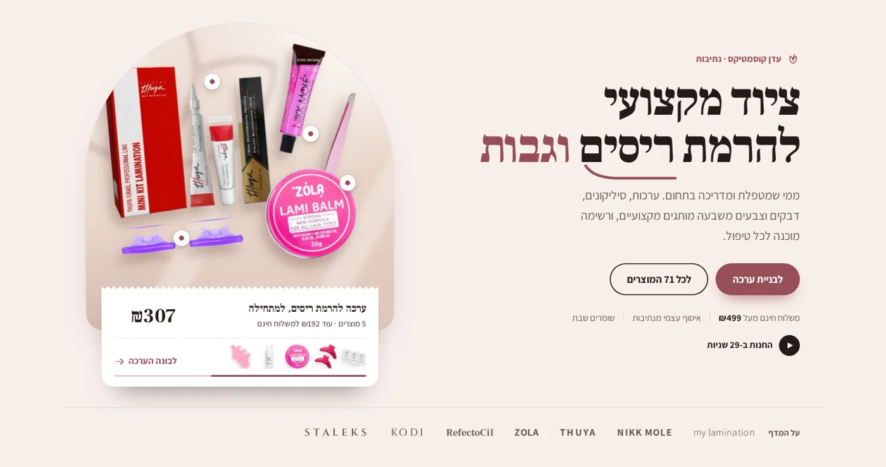
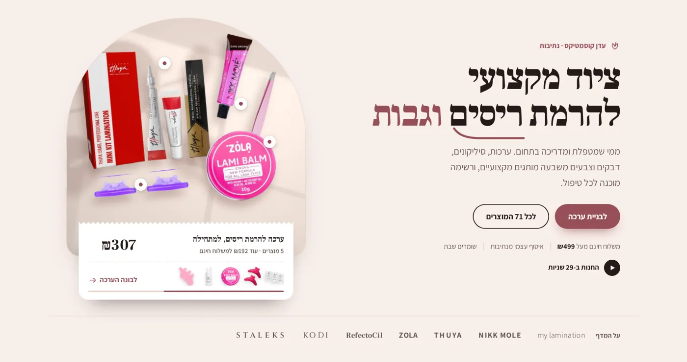
1 · המסך הראשון, מתחת למוצרים
אבן גיר חלבית, שתי שמשות של חלון מהצד הימני העליון, וצללים של עלי לוטוס עם החריץ שלהם. בשולחן העבודה האור נודד לאט (הסרט למטה).
צילום של אותו בריף: טרוורטין אמיתי עם נקבוביות, אור ששוקע בחומר, צל עם עומק. Nano Banana Pro נבחר כי הוא הכי צילומי באור ובחומר, ו-FLUX.2 [pro] מתחרה בו בהשוואה.
Top-down editorial photograph of an empty warm travertine stone surface in blush-cream tones, from #F4E9E2 to #DFC7BA. Late-afternoon window light from the upper right casts long, soft diagonal shadows of window mullions and the blurred silhouette of a lotus leaf and petals across the lower left third. Fine natural stone pores, a faint linen texture at one edge, a gentle tonal gradient. Medium-format still-life photography, overhead, 50mm, f/8, soft and even. The surface is completely empty. The centre stays open and calm, ready for objects to be placed later.
Video: Locked-off overhead camera over the same empty stone surface. The window light drifts very slowly across it and the soft lotus-leaf shadow sways gently, as in a light breeze. Nothing enters the frame. Calm, continuous, no cuts.
Never: objects, products, bottles, tubes, jars, boxes, tools, flowers, petals on the surface, people, hands, text, logos, watermark, glitter, marble veins, heavy vignette
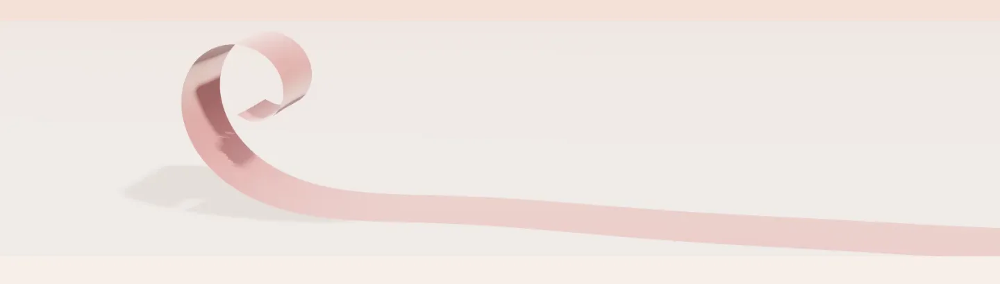
2 · הפס בין בונה הערכה למדף המותגים
סרט סאטן בתלת-ממד (Three.js) עם ברק סאטן אמיתי. העיקול מתהדק לכיוון הקצה, כמו ריס אחרי הרמה.
צילום מאקרו של משי אמיתי, ובסרטון V1 הסרט מתרומם ונעצר. FLUX.2 [pro] לתמונה (מחיר לפי פיקסל ברוחב 21:9), ו-Kling 3.0 או Veo 3.1 Fast לסרטון.
Macro studio photograph of a single narrow ribbon of dusty-rose silk satin, #BF7F7F to #964F58, lying straight across a cream background (#F8EFEA); toward one end it lifts into a soft, elegant upward curl, like an eyelash after a lift. Soft diffused light, a gentle sheen along the satin, extremely shallow depth of field, creamy background blur. Minimal and sculptural, with wide negative space on both sides.
Video: The satin ribbon lies straight, then slowly lifts at one end into a soft curl and holds there. Static camera, slow and graceful, one continuous motion, no cuts.
Never: eyes, eyelashes, faces, text, logos, several ribbons, bows, knots, gift wrapping, glitter, jewellery
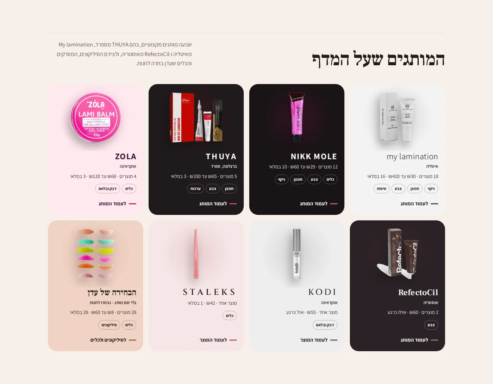
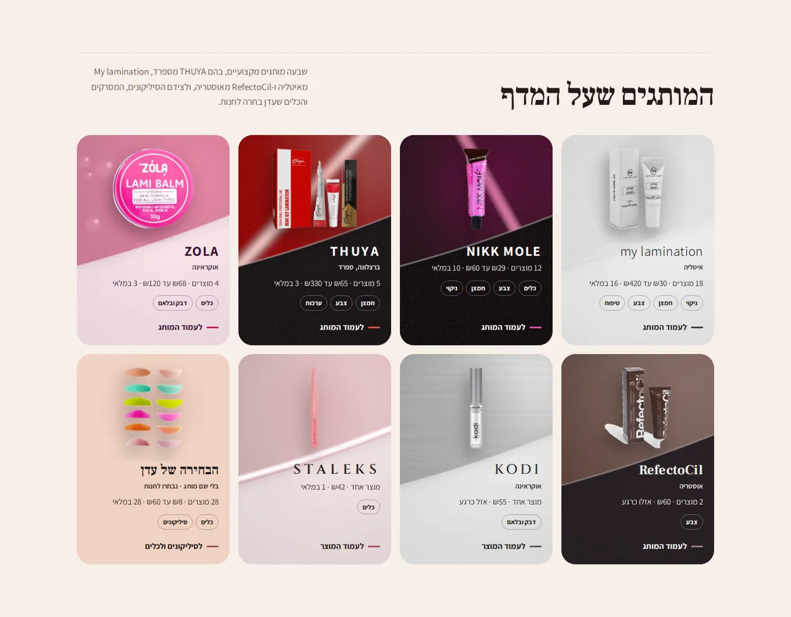
3 · מדף המותגים ועמודי המותג
שיידר אחד עם מוטיב לכל מותג, בצבעים שנמדדו מהאריזה. החומר ממלא את החלק העליון, מאחורי המוצר. צבע השדה נשאר מאחורי הטקסט, כדי שהקריאות לא תיפגע.
FLUX.2 [pro] עם קובץ ייחוס של צבעי המותג, ואחריו ציון צבע ל-ΔE מוגדר. מותג חדש בחנות מקבל שדה לבד, דרך לולאת האוטונומיה.
Abstract studio photograph, a material study: glossy red lacquer plane (#C10C08) meeting matte charcoal paper (#1F1A1C) at a soft angle, a thin brushed-silver edge between them. Soft studio light, shallow depth, generous empty space on one side for a product to be placed later.
Never: text, logos, letters, packaging, products, bottles, tubes, jars, boxes, people, hands, faces
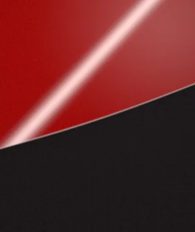
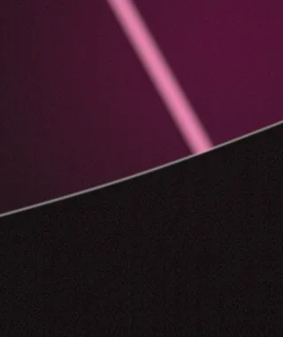
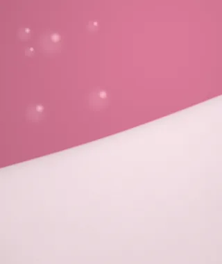
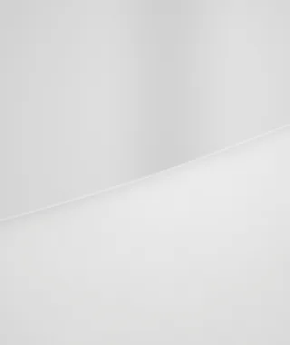
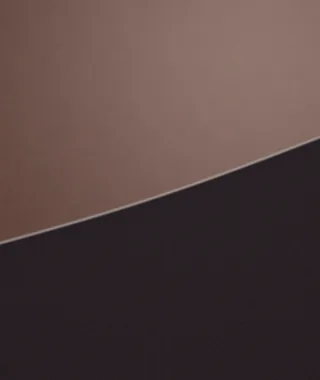
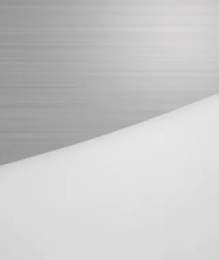
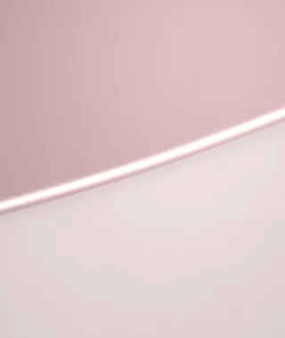
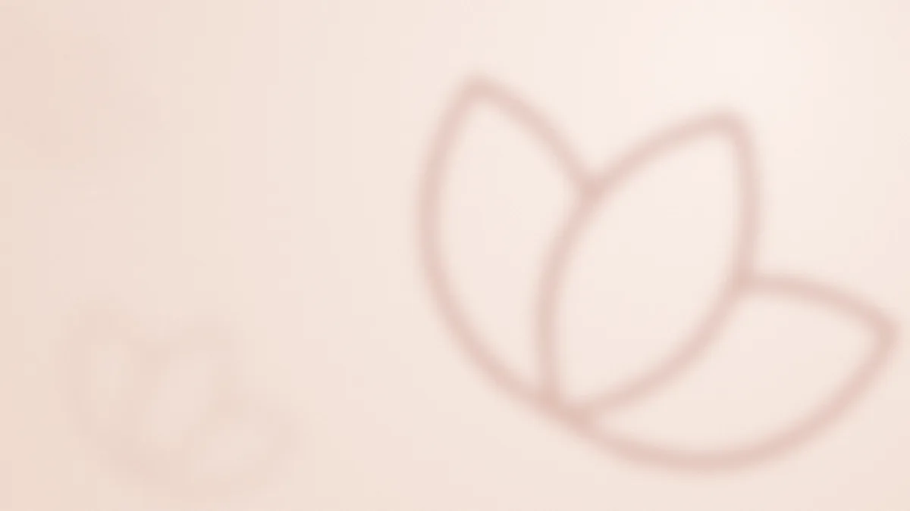
4 · הרקע של האזור "עדן"
הלוטוס מהלוגו שלה, גדול ורך, מאחורי הביוגרפיה והציטוט, בשקיפות של 28%.
לוטוס אמיתי על מים בשחר, קטן בשליש התחתון, עם אוויר מעליו. Seedream 4.5 חזק בפרטים אורגניים עדינים, ב-$0.04 לתמונה.
Soft-focus fine-art photograph of a single pale blush lotus flower floating on still water at dawn, light mist, warm cream light, muted palette of #F8EFEA, #F0D3C3 and #BF7F7F, the flower small in the lower third with calm open space above.
Never: several flowers, frogs, people, text, logos, saturated pink, dark water, lily pads covering the frame
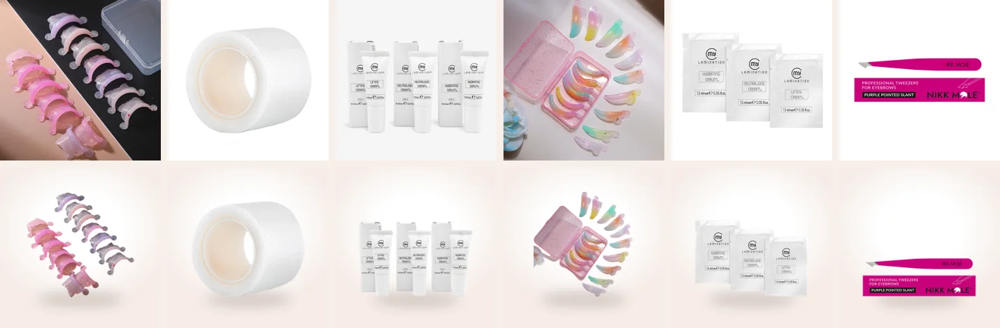
5 · החנות: 71 מוצרים על במה אחת
BiRefNet (רישיון MIT) מחליט רק על השקיפות. הצבעים של המוצר הם הצילום של החנות, והכלי מוכיח את זה בכל קובץ (PSNR). כך גם הקופסאות הלבנות, הסרט הדביק והסיליקונים שצולמו על היד נחתכים נקי.
כלום. מוצר שנוצר הוא מוצר מומצא. גם הווידאו של המוצרים נשאר בקוד: ריחוף, צל ונקודות קנייה.
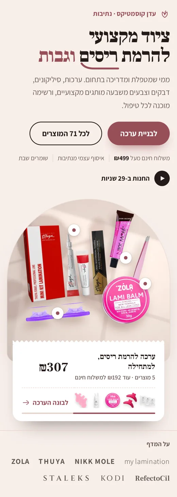
6 · לוטי ואזור הקורסים
לוטי מצוירת בקוד מרשת הפיקסלים של הלוגו. מחולל תמונות היה מייצר כל פעם לוטי קצת אחרת, וזה שובר את הדמות. תנוחות ומצבים חדשים נוספים בקוד, בחינם.
אזור הקורסים מחכה לתמונה אמיתית של ידיים בעבודה. רק אם אין, נוצרת תמונת אווירה (Nano Banana Pro), והיא מסומנת כך באתר.
שני סרטי הטיוטה נבנו בחינם, כל אחד 8 שניות, מושתק ובלי חיתוכים. כשה-API מחובר, הם הופכים לבריף של הסרטונים המצולמים.
V1 · הפס הרחב
שוכב ישר, מתעקל בקצה ונעצר, בלי קפיצה. באתר הוא מתנגן פעם אחת כשנכנס למסך, ונעצר על העיקול. בנייד ובמצב "הפחתת תנועה" מוצגת רק התמונה.
V2 · מאחורי המוצרים במסך הראשון
המצלמה נעולה מעל המשטח, האור זז לאט, והצל של הלוטוס מתנודד כמו ברוח. שום דבר לא נכנס לפריים. בשולחן העבודה בלבד.
הסדר קבוע, וכל שלב נסגר בבדיקה. שום קובץ לא עולה לאתר בלי אישור עם נימוק.
| שלב | מה קורה | כלי | עלות |
|---|---|---|---|
| 1 | בדיקת המפתחות: איזה מסלול זמין | imagegen --probe | $0 |
| 2 | טיוטות לכיול הניסוח וההרכב, 10–20 לכל קונספט, עם השכבה החינמית כקובץ ייחוס להרכב | Cloudflare · FLUX.2 [klein] | $0 |
| 3 | השוואת שלושה דגמים על אותו בריף, בגיליון אחד | --bakeoff | $0.25 |
| 4 | תמונות סופיות לחמשת הקונספטים | fal: Nano Banana Pro · FLUX.2 [pro] · Seedream | ≈ $5 |
| 5 | בדיקות אוטומטיות, סקירה, אישור עם נימוק, ציון צבע לפלטה | image-review · grade.py | $0 |
| 6 | שני סרטונים מהתמונות שאושרו: טיוטה, ואז גרסה סופית | Veo 3.1 · Kling 3.0 | ≈ $3.30 |
| 7 | פרסום לאותם מקומות, בדיקת האתר, Lighthouse, העלאה לאוויר | --publish · site-qa | $0 |
| סה"כ, עם מרווח לניסיונות חוזרים | ≈ $12 (תקרה $20) |
המפתחות נכנסים כמשתני סביבה בהגדרות הסביבה, לא בצ'אט.
CLOUDFLARE_ACCOUNT_ID ו-CLOUDFLARE_API_TOKEN עם הרשאת Workers AI. פותח טיוטות אמיתיות בחינם, מיד.FAL_KEY, עם טעינה של $15–20. פותח את התמונות הסופיות ואת שני הסרטונים.